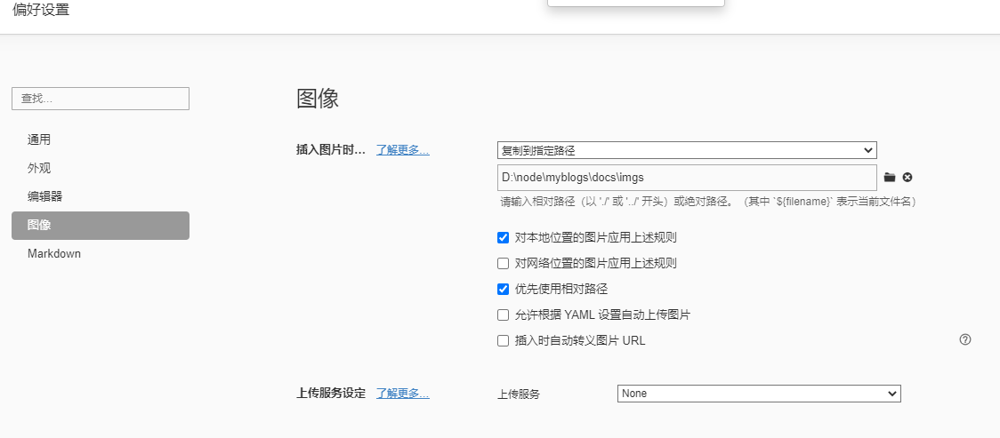

搭建静态博客系统构
基础环境搭建
该博客系统采用的是mkdocs和mkdocs-terminal主题插件共同构建而来。

- mkdocs安装配置
mkdocs是一款使用Python编写的快速、简单的站点生成器。在安装mkdocs 之前，需要先构建python 环境，使用pip 进行安装。
查看版本号
如有正常输出版本号，则表示安装成功。
创建一个新的站点
- 主题插件安装
使用pip 安装terminal 主题
修改站点配置文件mkdocs.yml
修改theme 值，增加plugins值。
- 预览站点
首先，需要切入到mkdocs.yaml 所在目录，使用如下命令启动内置开发站点服务器。
使用浏览器打开http://127.0.0.1:8000/站点，便可预览站点。
- 新增导航
新增导航，直接在mkdocs.yaml文件的nav 下创建新的导航名称，和指定的页面即可，例如：
而后只需要创建相应的md文档即可完成导航的创建。
- 构建网站
如果预览效果达到预期，想要发布的话，使用如下命令生产站点
它会创建site 目录，是build 指令将md 文档转换为了html 文件，至此，我们就可以将site 目录发布即可。
typora配置
- 本地图像插入修改
这里使用的是typora 编辑器，使用【文件】【打开】打开站点的docs 目录，选择【文件】【偏好设置】
选择【图像】，插入图片选择【复制到指定目录】，目录选择 【docs目录下的imgs目录】，勾选【对本地位置的图片应用上述规则】和【优先使用相对路径】。
